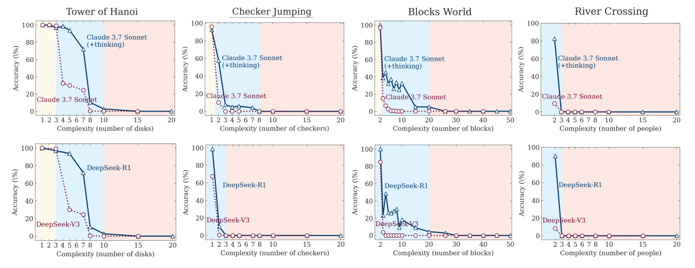

Document 1 #
this document is an example. #
here is some inline images

My Test Image
here is another image in native markdown format

My Math Post #
inline formular: \[ f(x) = \int_{-\infty}^\infty\hat f(\xi)\,e^{2 \pi i \xi x}\,d\xi \]
inline math symbol: $C_{query}$
Euler’s identity is famous: $e^{i\pi} + 1 = 0$ Euler’s identity is ( e^{i\pi} + 1 = 0 )
Euler’s identity is [e^{i\pi} + 1 = 0]
And Einstein’s formula:
$$ E = mc^2 $$
This is another example $$ f(x) = \int_{-\infty}^\infty\hat f(\xi),e^{2 \pi i \xi x},d\xi $$
test in UML #
here is some UML
@startuml
Alice -> Bob: Hello
Bob --> Alice: Hi!
@enduml
here it is
@startuml
actor User
User -> System : Login
System -> Database : Check credentials
Database --> System : Return result
System --> User : Success or failure
@enduml
test diagram #
here is some diagram
stateDiagram-v2
State1: The state with a note
note right of State1
Important information! You can write
notes.
end note
State1 --> State2
note left of State2 : This is the note to the left.